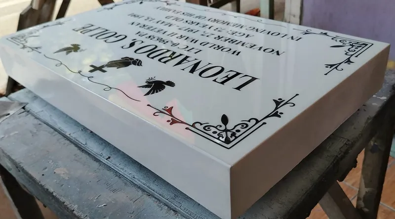

About Kafred Granite & Marble Installation Services
A lapida maker and granite and marble installer in Rodriguez (Montalban), Rizal, dedicated to careful engraving and dependable stonework.
Who we are
Memorial craftsmanship from Burgos, Rodriguez, Rizal
Kafred Granite & Marble Installation Services makes lapida and memorial plaques and installs granite and marble stonework.
Our shop is at 63B A. Mabini St., Burgos, in Rodriguez (Montalban), Rizal. From there we engrave, fabricate and install memorial stones for families in the area, and we take on granite and marble installation work where our craft is needed.
Each piece in our portfolio was made in our shop. We photograph finished work on the bench and, where families allow, after installation, so prospective customers can see the real quality of the lettering, portraits and stone.

Our focus
Lapida engraving, granite, marble and stonework
Four related crafts, practised together in one shop.
Lapida engraving
Names, dates, verses and ornaments engraved into granite and marble in silver, gold, white or black lettering, with script or block typefaces as the family prefers.
Memorial stone design
Single, double and family layouts with ceramic photo inserts or laser-etched portraits, borders, crosses, doves, praying hands and floral details.
Granite & marble installation
Fabricated stone fitted with brass standoff hardware or set at the gravesite, so the finished plaque sits straight, secure and ready for the family.
Craftsmanship
Attention to the details that last
A memorial is read for decades. We take time over letter spacing, alignment and the depth and fill of the engraving so the inscription stays crisp on polished black granite, speckled black galaxy granite, blue pearl granite or veined white marble.
Portraits are handled with particular care. Ceramic photo inserts are framed cleanly in the stone, and laser-etched portraits are prepared so the likeness is faithful and the tones are even across the surface.
Before a piece leaves the shop we check every name, date and line against the family's instructions.
See examples of our workHow we work with you
Clear communication, respectful service
Ordering a lapida often comes at a difficult time. We try to make the process simple and calm.
You can call us or message the shop on Facebook. We will ask about the wording, the material you prefer, the size of the plaque, whether you would like a portrait, and where the stone will be installed. We confirm the final text with you before engraving.
There is no pressure and no sales script. We answer questions plainly, explain what is possible in each material, and keep you informed as the work progresses.
Inquire
Let's talk about what you need
Call us, send a message on Facebook, or visit the shop in Burgos, Rodriguez (Montalban), Rizal. We are glad to discuss designs, inscriptions, materials and installation at your pace.